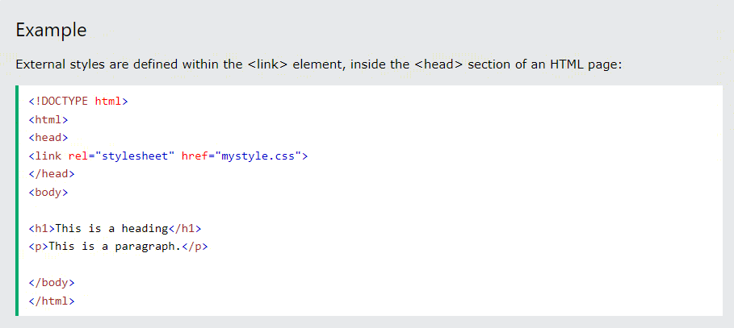
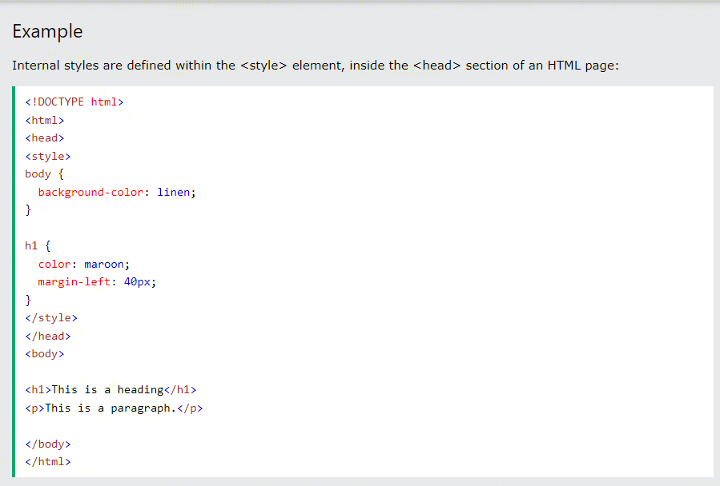
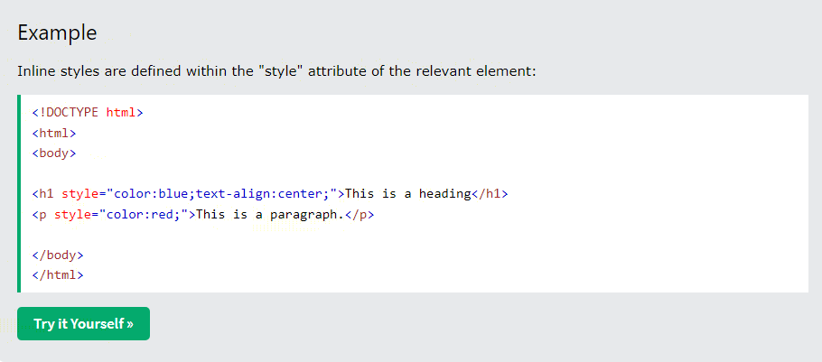

CSS
CSS stands for C ascading S tyle S heets and is a simple design language intended to simplify the process of making web pages presentable. CSS handles the look and feel part of a web page, It also includes user interfaces such as hover, clicking and scrolling. CSS is a simple language which is easy to learn but the grammar of this language is very important and has to be correct. Minor changes in code can lead to disasters!!

CSS SOLVED A BIG PROBLEM
HTML was NEVER intended to contain tags for formatting a web page!
HTML was created to describe the content of a web page, like:
< h1>This is a heading
< p>This is a paragraph.< /p>
When tags like < font>, and color attributes were added to the HTML 3.2 specification, it started a nightmare for web developers. Development of large websites, where fonts and color information were added to every single page, became a long and expensive process.
To solve this problem, the World Wide Web Consortium (W3C) created CSS.
CSS removed the style formatting from the HTML page!
CSS SYNTAX

The selector points to the HTML element you want to style.
The declaration block contains one or more declarations separated by semicolons.
Each declaration includes a CSS property name and a value, separated by a colon.
Multiple CSS declarations are separated with semicolons, and declaration blocks are surrounded by curly braces.
1. p is a selector in CSS (it points to the HTML element you want to style: < p>).
2. color is a property, and red is the property value
3. text-align is a property, and center is the property value
INSERTING CSS:
Three Ways to Insert CSS
There are three ways of inserting a style sheet:
1. External CSS
2. Internal CSS
3. Inline CSS
1. External CSS
With an external style sheet, you can change the look of an entire website by changing just one file!
Each HTML page must include a reference to the external style sheet file inside the < link> element, inside the head section.

An external style sheet can be written in any text editor, and must be saved with a .css extension.
The external .css file should not contain any HTML tags.
Internal CSS
An internal style sheet may be used if one single HTML page has a unique style.
The internal style is defined inside the < style> element, inside the head section.

Inline CSS
An inline style may be used to apply a unique style for a single element.
To use inline styles, add the style attribute to the relevant element. The style attribute can contain any CSS property.

Tip: An inline style loses many of the advantages of a style sheet (by mixing content with presentation). Use this method sparingly.